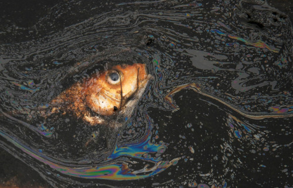
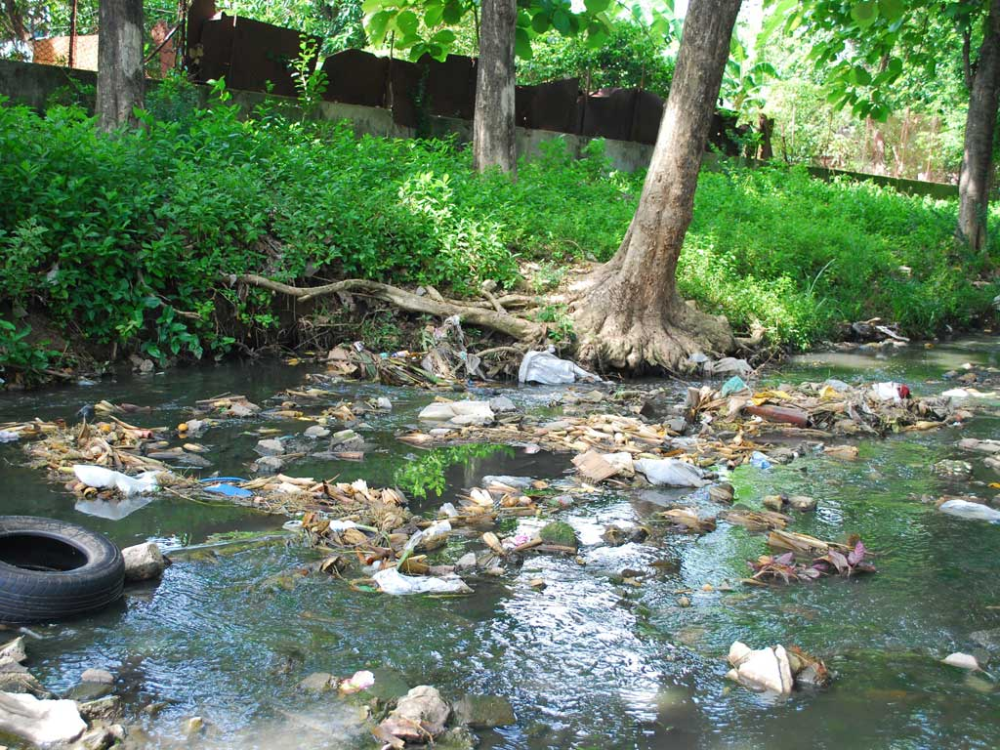
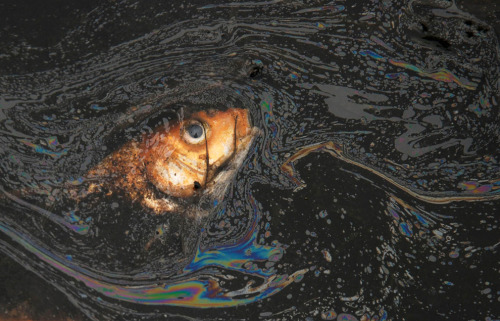
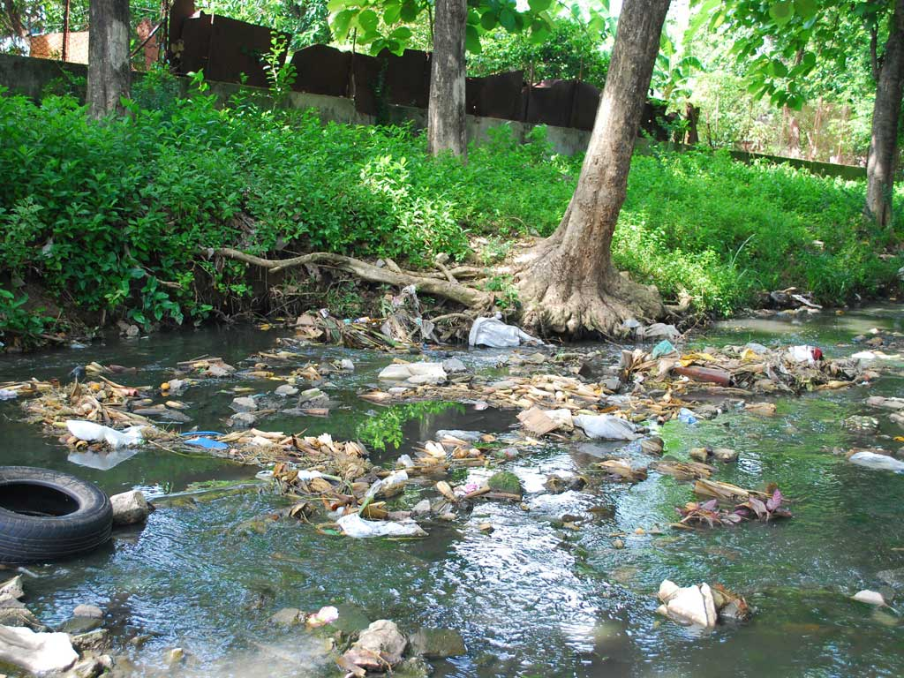
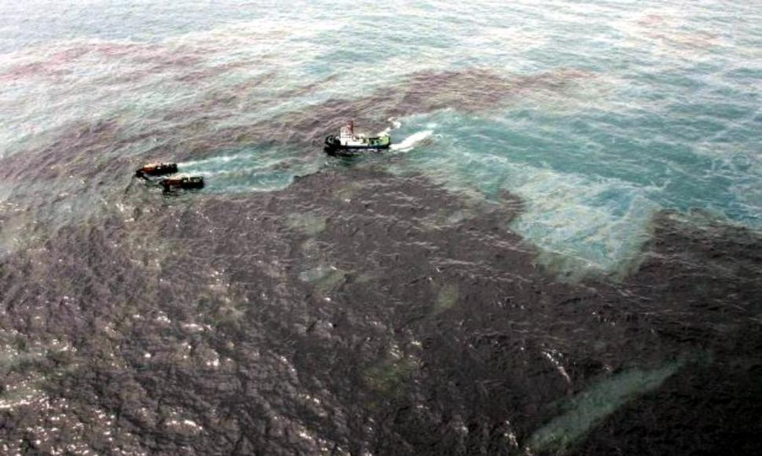
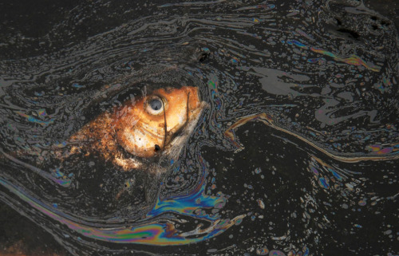
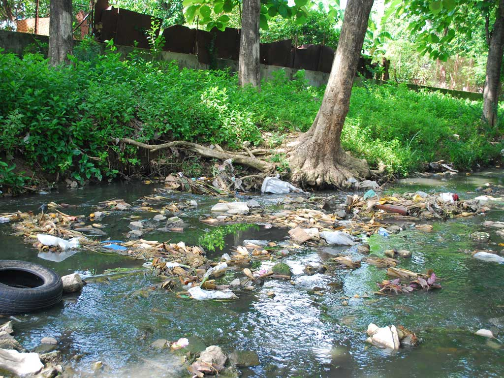
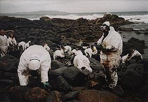
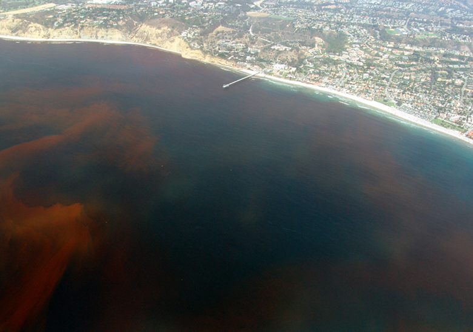
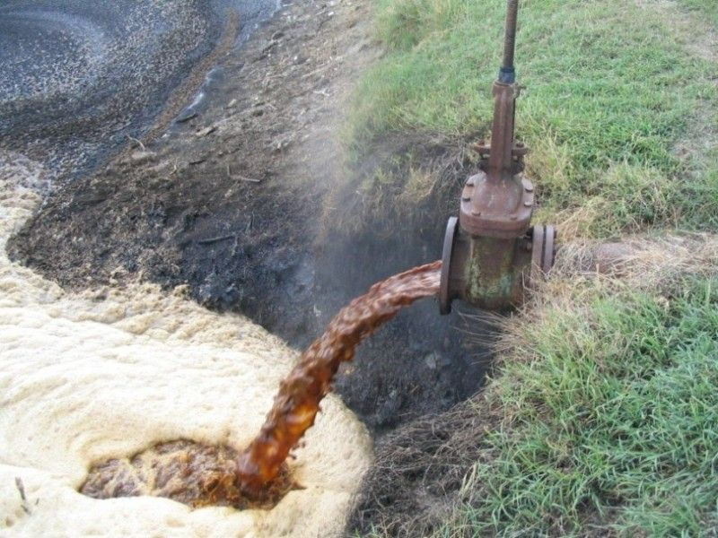

La contaminacion del agua puede ser visible en las espumas de los rios, la basura domestica arrojada en los arroyos, la capa de aceite en la superficie de los rios, los derrames de petroleo, entre otras. No obstante, gran parte de la contaminacion no se ve, por que los lagos afectados por la lluvia acida lucen sanos.

En cuanto a los recursos naturales, la contaminacion se da debido a la explotacion del petroleo y el gas, los minerales de fondo como arenas negras, gravas diamantiferas, carbonatos, entre otros: ademas de las centrales mareomotrices que producen energia electrica a partir de la energia de los mares. La extraccion de organismos marinos para la alimentacion y con otros fines como el farmaceutico, ornamental, construccion, etcetera. Un ejemplo es la extraccion del caracol purpura (Plicopurpura pansa). Entre las pesquerias mas importantes se encuentra el atun, la anchoveta y las anchoas, camarones, langosta, moluscos y tiburones, por mencionar algunos
Derrame de Petroleo
Un derrame de petroleo o marea negra es un vertido de este hidrocarburo que se produce debido a un accidente o practica inadecuada que contamina al medio ambiente, especialmente el mar.
Estos derrames afectan todo el ecosistema donde se produce el evento lo cual perjudica catastroficamente la fauna y la pesca, asi como a las costas con efectos que pueden llegar a ser muy persistentes en el tiempo.
\\
La mayoria de los desastres petroliferos pasan en el mar, sobre todo cerca de las costas donde los ecosistemas son mas diversos y llenos de millares de diferentes especies.
Los peces pueden incorporar contaminantes organicos persistentes y los depredadores que los consumen transmiten envenenamiento petrolero de un animal a otro por la cadena alimenticia, poniendo en riesgo incluso la seguridad en la alimentacion humana.
Las aves son las especies mas vulnerables, pues al no poder volar, estas se quedan en la playa para no herirse aun mas y terminan muriendo de frio o de hambre.
Marea Roja
Las mareas rojas tienen importantes consecuencias en los ambientes marinos debido a la alta concentracion de toxinas que liberan. Los grupos de toxinas mas importantes encontrados en estas algas son: Las toxinas amnesicas, las toxinas paralizantes y las toxinas gastricas.

La marea roja es un fenomeno natural caracterizado por un aumento de la concentracion de ciertos organismos componentes del plancton. Bajo ciertas condiciones ambientales se produce un aumento exagerado de organismos fitoplanctonicos (Especialmente dinoflagelados), lo que se conoce como florecimiento, floraciones algales, causando grandes cambio de coloracion del agua debido a que poseen pigmentos con los que captan la luz del sol. Estos pigmentos pueden ser de color rojo, amarillo, verde, cafe o combinaciones, siendo la mas frecuente la coloracion rojiza, de la que previene el apelativo.
La contaminacion industrial del agua; causas, consecuencias y datos.
La contaminacion del agua es causada por las descargas del productos quimicos nocivos y sus compuestos en el agua, lo que deja al agua no apta para beber y otros propositos. Esto hace que el ague resulte inutil para los seres humanos, y tambien pone en peligro la vida acuatica y la fauna.

La contaminacion del agua es causada por la emision de aguas residuales domesticas o urbanas, de residuos agricolas, los contaminantes y los efluentes industriales que llegan a los cursos de agua. Hoy en dia, una de las principales fuentes de contaminacion del agua, son los materiales residuales vertidos por las zonas industriales, y este polucion se conoce como la contaminacion industrial del agua.
Los materiales de desecho como los acidos, alcalis, metales toxicos y pesados, aceites, grasas, colorantes, pesticidas e incluso materiales radioactivos se vierten en las masas de agua por muchas zonas o areas industriales.